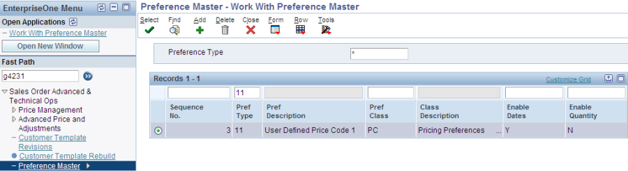
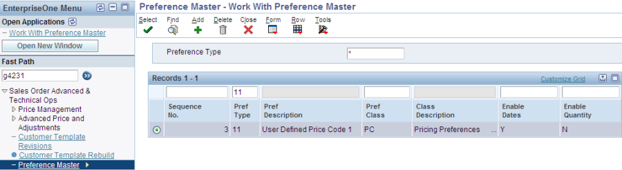
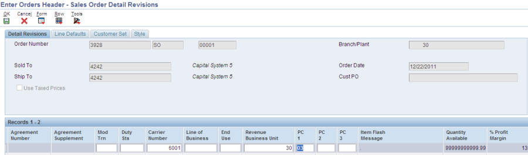
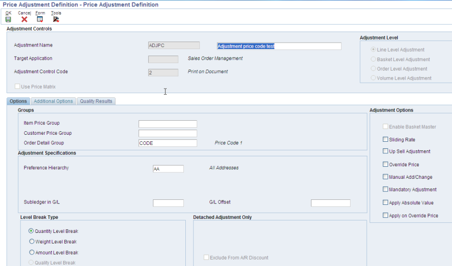
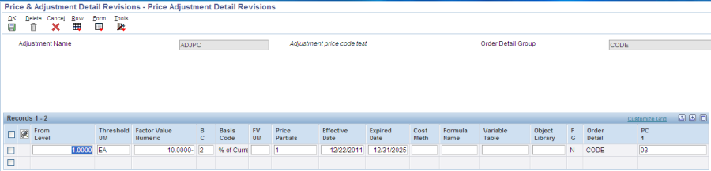
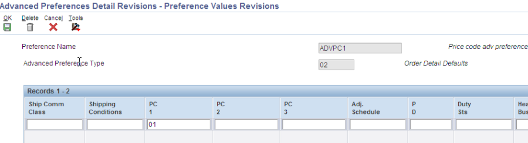
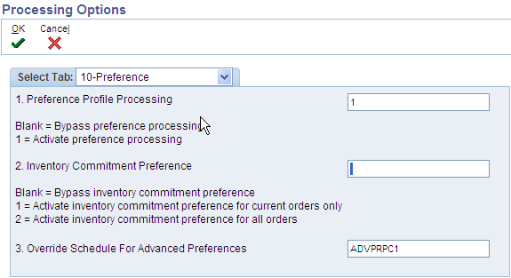

Add a new preference for customer 4242 and item 1001 to default PC1 field to value of '03'

This paper shows the setup for Basic Preference type 11,12,13 - User Defined Price codes, and Advanced Preference type 02 - Order Detail Defaults - to be used within the Sales Order system in conjunction with advanced pricing.[This section is not visible to customers.]
Basic Preference Type 11,12, 13
Overview
Setup
Preference Master P40070
Activating preference processing
P4210 - Entering a sales order with PC1/PC2/PC3 basic preference
Use PC1/PC2/PC3 basic preference with advanced pricing , example
Advanced pricing setup
P4210 – entering a sales order with PC1/PC2/PC3 basic preference and advanced pricing
Example of using Advanced preference 02 and Basic Preference together
FAQ
The User Defined Price Codes Basic Preferences are used to default the Price Code fields into the Sales Order Detail (F4211) file, based on the preference hierarchy.
The system will search through the preference hierarchy until it finds a match. The Price Code 1 (UPC1), Price Code 2 (UPC2) and Price Code 3 (UPC3) fields in the Sales Order Detail file (F4211) are updated.
PC1 is set using preference type 11, PC2 with preference type 12 and PC3 with preference type 13.
In order to setup and use Basic Preferences, please reference Preference Profiles For EnterpriseOne
Note that it is also possible to use an Advanced Preference, "Order Detail Defaults" (type 02) to populate the UPC1/UPC2/UPC3 fields in the F4211. For details, please see document Order Detail Defaults Advanced Preference with Advanced Pricing (P4071/P4072/P4070/P4092/P4074)
Go to the menu G4231 and open Preference Master P40070. Select Pref type 11 :

Add a new preference for customer 4242 and item 1001 to default PC1 field to value of '03'
The following 3 processing options must be set :
1. Processing options of R40400 - Process Ctl2 (#3 Price Code 1) :

2. Processing options of P4210 , Preference tab(#1 Preference Profile Processing) :

3. Processing option of P4210, Versions tab (#6 Preference Profile (R40400) :

P4210 - enter a sales order for customer 4242 and item 1001:

Notice that the PC1 column defaults to the value of '03' defined in the preference:

Go to menu G42311 and create an order detail group based on Price code 1:

Define a price adjustment definition using the above detail order group :

Enter the details of the adjustment for a 10% discount :

Attach the adjustment to an advanced pricing schedule :

P4210 - enter a sales order having the preference processing activated and the advanced pricing schedule SCHPC attached to order header.
Price code '03' defaults to the F4211 details which match the adjustment detail, activating the discount of 10% :

Price history shows the discount :

With the basic preference setup still in place, where the record in P40070 will set the PC1 field to value '03', define an advanced preference that will default PC1 field to value '01' :

Put the advanced preference schedule in the processing options of P4210 :

Enter a sales order for customer and item combination used previously:

Notice that PC1 grid column defaults to value '01' from the adv preference. (Take into account that advanced preference takes precedence over the basic preference) :

Question1 : Can we use the basic preference types 11, 12, and 13 to drive by Branch plant?
Answer1 : In Basic Preference within E1, it currently doesn't have an order detail group preference; the equivalent basic preference is broken down in different preferences (Price code 1 #11 and Work with Price Code 2 #12 preference). Customer can use advanced order detail preference '02' where there are multiple driver fields (Business unit, Revenue business unit, Agreement number etc.)
This feature of using the Branch plant as a driver field in Basic Preference is currently not available.
Question2 : Is there any functionality behind Special Handling code for UDC 40/P1/P2/P3?
Answer2: From the code level research it is noticed that, the Special Handling code for UDC 40/P1, UDC 40/P2 and UDC 40/P3 is not used anywhere in the system.